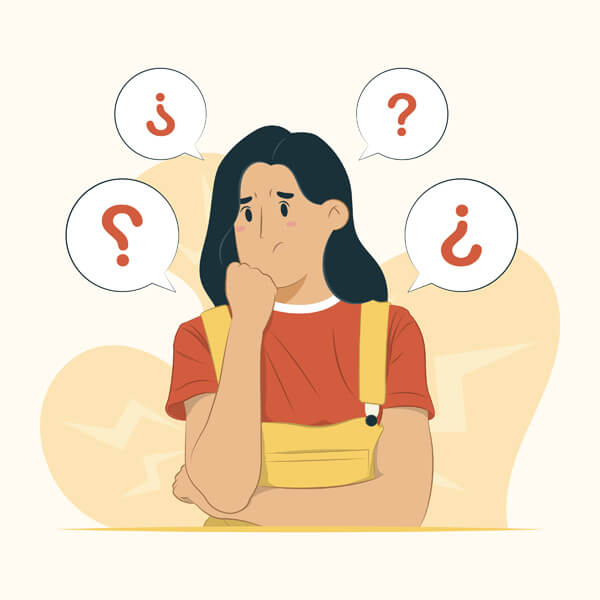

Prevenir la ansiedad.
Prevenir la ansiedad.
Podemos tomar algunas medidas preventivas para evitar o reducir la intensidad y frecuencia de la ansiedad. Aquí te presentamos algunas estrategias para prevenir la ansiedad:
- Mantener una vida activa:El ejercicio físico regular ayuda a reducir los niveles de estrés y ansiedad, mejora el estado de ánimo y aumenta la autoestima.
- Adoptar una alimentación saludable:Una dieta equilibrada y que incluya alimentos variados es un factor que ayuda a mantener a la ansiedad en niveles moderados.
- Aprender técnicas de relajación:La meditación, la respiración profunda y otras técnicas de relajación son métodos que ayudan a reducir el estrés y la ansiedad.
- Evitar el consumo de sustancias estimulantes:La cafeína, el alcohol y el tabaco pueden aumentar los niveles de ansiedad. Por ello, es recomendable reducir su consumo o evitarlos por completo.
- Dormir lo suficiente:Una buena noche de sueño es fundamental para el bienestar emocional. Dormir entre 7 y 9 horas diarias puede ayudar a reducir la ansiedad.
- Establecer límites:Aprender a decir "no" y establecer límites en las relaciones personales y laborales puede ayudar a reducir el estrés y la ansiedad.
En resumen, la prevención de la ansiedad implica adoptar un estilo de vida saludable, aprender técnicas de relajación, evitar el consumo de sustancias estimulantes y buscar ayuda profesional en caso necesario.